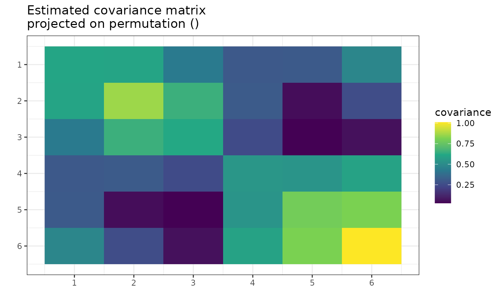
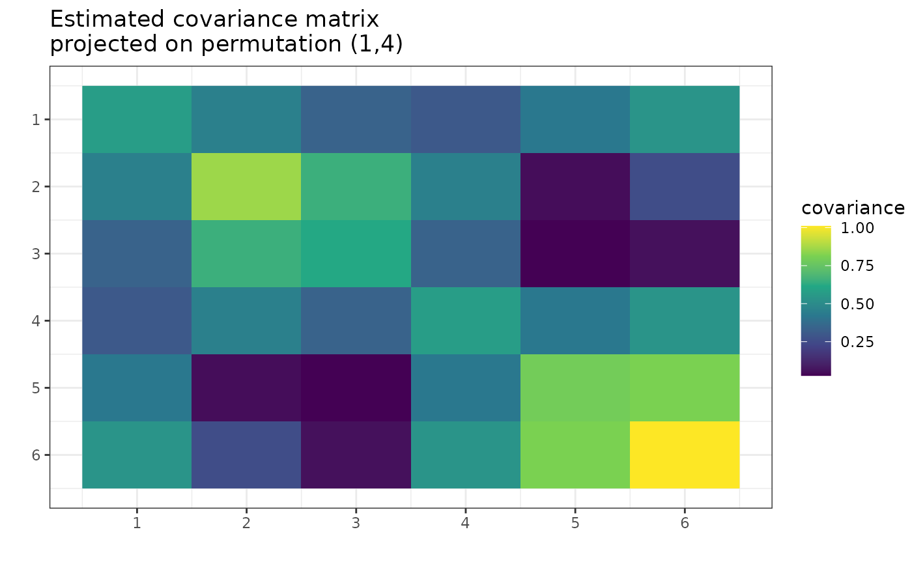
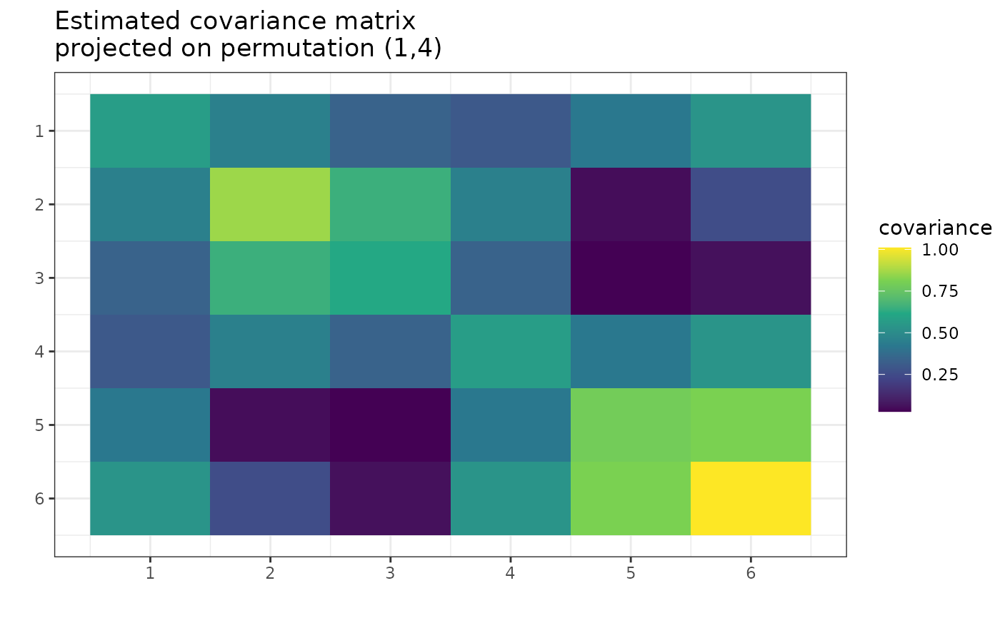

Plot the heatmap of the MAP covariance matrix estimator
or the convergence of the optimization method.
The plot depends on the type argument.
Usage
# S3 method for gips
plot(
x,
type = NA,
logarithmic_y = TRUE,
logarithmic_x = FALSE,
color = NULL,
title_text = "Convergence plot",
xlabel = NULL,
ylabel = NULL,
show_legend = TRUE,
ylim = NULL,
xlim = NULL,
...
)Arguments
- x
Object of a
gipsclass.- type
A character vector of length 1. One of
c("heatmap", "MLE", "best", "all", "both", "block_heatmap"):"heatmap","MLE"- Plots a heatmap of the Maximum Likelihood Estimator of the covariance matrix given the permutation. That is, theSmatrix inside thegipsobject projected on the permutation in thegipsobject."best"- Plots the line of the biggest a posteriori found over time."all"- Plots the line of a posteriori for all visited states."both"- Plots both lines from "all" and "best"."block_heatmap"- Plots a heatmap of diagonally block representation ofS. Non-block entries (equal to 0) are white for better clarity. For more information, see Block Decomposition - [1], Theorem 1 section invignette("Theory", package = "gips")or in its pkgdown page.
The default value is
NA, which will be changed to "heatmap" for non-optimizedgipsobjects and to "both" for optimized ones. Using the default produces a warning. All other arguments are ignored for thetype = "heatmap",type = "MLE", ortype = "block_heatmap".- logarithmic_y, logarithmic_x
A boolean. Sets the axis of the plot in logarithmic scale.
- color
Vector of colors to be used to plot lines.
- title_text
Text to be in the title of the plot.
- xlabel
Text to be on the bottom of the plot.
- ylabel
Text to be on the left of the plot.
- show_legend
A boolean. Whether or not to show a legend.
- ylim
Limits of the y axis. When
NULL, the minimum, and maximum of thelog_posteriori_of_gips()are taken.- xlim
Limits of the x axis. When
NULL, the whole optimization process is shown.- ...
Additional arguments passed to other various elements of the plot.
Value
When type is one of "best", "all" or "both",
returns an invisible NULL.
When type is one of "heatmap", "MLE" or "block_heatmap",
returns an object of class ggplot.
See also
find_MAP()- Usually, theplot.gips()is called on the output offind_MAP().project_matrix()- The function used withtype = "MLE".gips()- The constructor of agipsclass. Thegipsobject is used as thexparameter.
Examples
require("MASS") # for mvrnorm()
perm_size <- 6
mu <- runif(6, -10, 10) # Assume we don't know the mean
sigma_matrix <- matrix(
data = c(
1.0, 0.8, 0.6, 0.4, 0.6, 0.8,
0.8, 1.0, 0.8, 0.6, 0.4, 0.6,
0.6, 0.8, 1.0, 0.8, 0.6, 0.4,
0.4, 0.6, 0.8, 1.0, 0.8, 0.6,
0.6, 0.4, 0.6, 0.8, 1.0, 0.8,
0.8, 0.6, 0.4, 0.6, 0.8, 1.0
),
nrow = perm_size, byrow = TRUE
) # sigma_matrix is a matrix invariant under permutation (1,2,3,4,5,6)
number_of_observations <- 13
Z <- MASS::mvrnorm(number_of_observations, mu = mu, Sigma = sigma_matrix)
S <- cov(Z) # Assume we have to estimate the mean
g <- gips(S, number_of_observations)
if (require("graphics")) {
plot(g, type = "MLE")
}

g_map <- find_MAP(g, max_iter = 30, show_progress_bar = FALSE, optimizer = "hill_climbing")
if (require("graphics")) {
plot(g_map, type = "both", logarithmic_x = TRUE)
}
 if (require("graphics")) {
plot(g_map, type = "MLE")
}

# Now, the output is (most likely) different because the permutation
# `g_map[[1]]` is (most likely) not an identity permutation.
if (require("graphics")) {
plot(g_map, type = "MLE")
}

# Now, the output is (most likely) different because the permutation
# `g_map[[1]]` is (most likely) not an identity permutation.